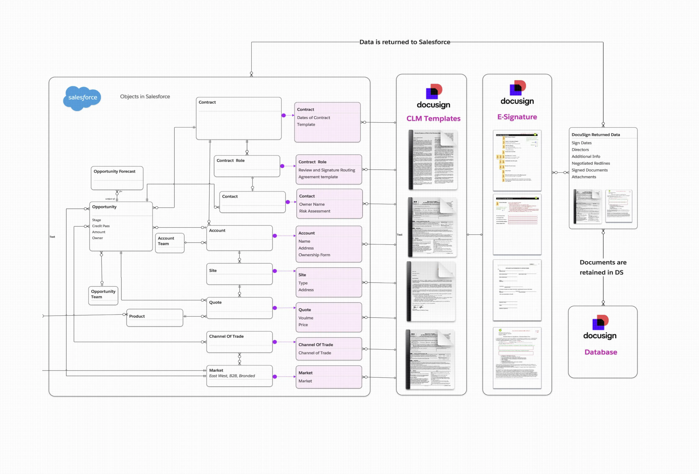
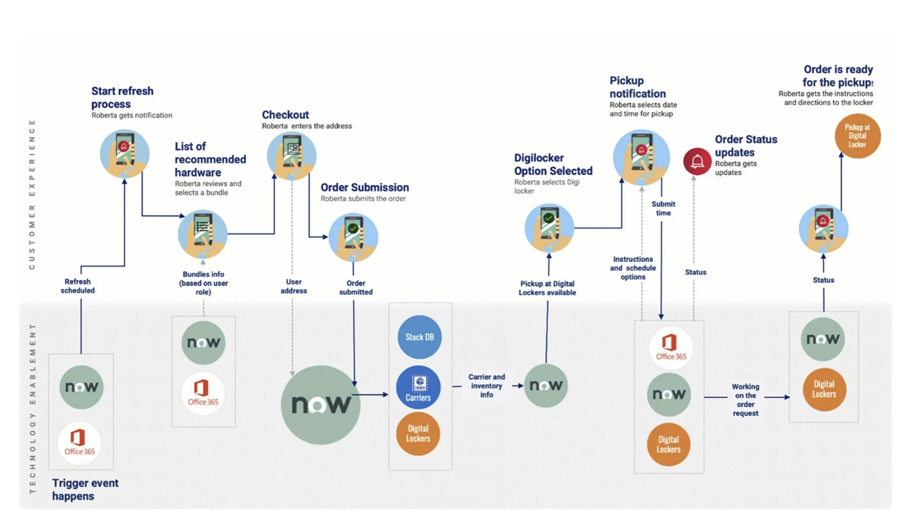
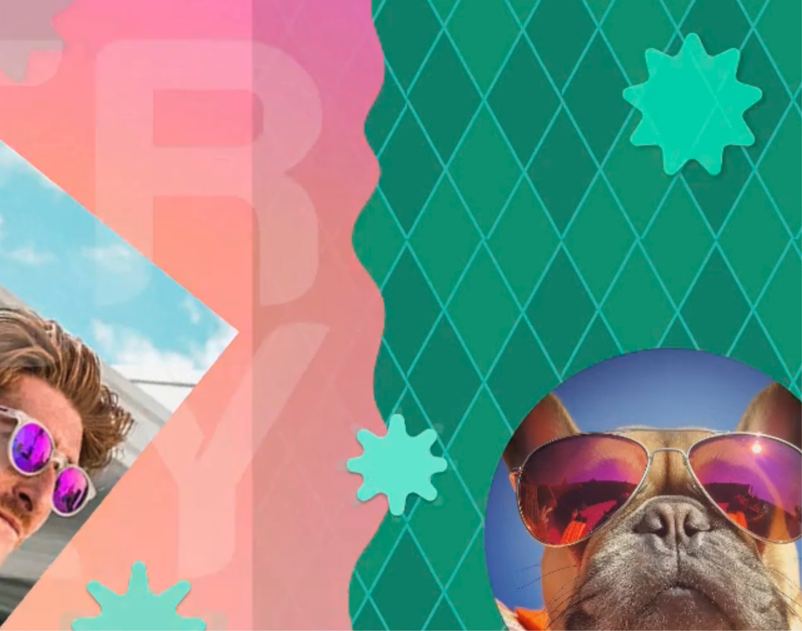

Rancourt & Co.
WEB DESIGN
Research, product data model, accessibility and a Shopify store a team of three can run
- Research: ADA compliance, site audit
- Schema
- Shopify custom theme design, including all widgets
Design Consultant with 10+ years of experience in product management, QA, and design. Specializes in digital transformation, service design, and AI-assisted SaaS solutions. Leads cross-functional teams in agile environments. Multiple Salesforce certifications, PMP certification, MA in Education. Experienced in branding, UX/UI design, and end-to-end website development, with a focus on clear information architecture and functional, user-centered interfaces.
sandy@tayts.com4153173404WEB DESIGN
Research, product data model, accessibility and a Shopify store a team of three can run


SERVICE DESIGN
Energy Sales Digital Transformation in Salesforce with DocuSign Agreement Cloud Integration
WEB DESIGN · GRAPHIC DESIGN · PRESENTATION · SERVICE DESIGN
A platform designed to give revenue teams real-time clarity into deal path, buyer signals, and next actions—exposing drift and alignment gaps before they become losses.
WEB DESIGN
Your own vacation rental website.
GRAPHIC DESIGN
Book of short Urban Fantasy Stories.

SERVICE DESIGN
IT Support Digital Transformation

WEB DESIGN
College Incentives Harnessed

WEB DESIGN · GRAPHIC DESIGN
Fancy Portland Eyewear Startup

PRESENTATION
Team Engagement and Alignment

SERVICE DESIGN
ConEd Safety Inspection Solved